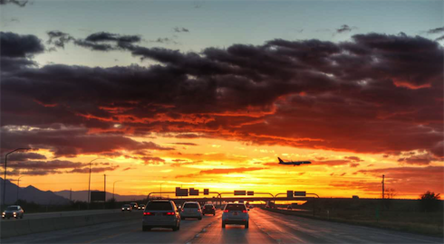
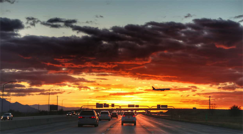

一大早，吃了点早餐，我们驱⻋前往蒙特雷海滩，加州的阳光真的很神奇，可以
让所有景色都变得熠熠生辉，抹上一层美丽的色彩。那天早上，海滩边上很多
人，有带着狗狗晒太阳的(人家狗狗都是自带沙滩椅的......)、有在打沙滩排球
赛的、有玩水上摩托艇的、有自己在运动的......还有帅气健硕的救生员，海边的
美国人身材都特别好，果然还是运动基础好，小妹妹的身材都跟体操运动员似
的，玲珑曼妙，生机勃勃。换了拖鞋在海滩上漫步，走到一堆在玩沙子的小朋友
身边，问她们:“Is it your castle?” 她们骄傲地说:“yes!and I like your
nails!” 哈哈，真开心，被小妹妹称赞了心情都特别好~
从蒙特雷出发就去 17mile 了。如果说你没⻅过 17mile 的海，你一定不会知道
自己这辈子错过了什么......那种景色，我无法描述，大概就是至今⻅过最美的
海，一望无际，颜色丰富，层次分明，从此以后其他的海在我心中都只是一滩普
通的水而已......
据说 17mile 本来是一群富人居住的私人海滩，因为太美了，政府问他们是否愿
意开放，他们居然也同意了，于是就收⻔票开放给游客，感谢这群慷慨的富人，
让我们有机会一起享受这片绝世美景。里面是一群蜿蜒的山路，在山的那边就是
美丽的海边，仿佛上了一层美图秀秀的海，让人痴迷让人醉......
里面沿海的地方还有私人高尔夫球场，几个悠闲的美国大叔不紧不慢地在海边玩
着自己的球，也并不在乎身边围观的屌丝吃瓜群众，专心地交谈切磋球技，隔着
一道围⻔就像隔开了两个世界，而我们则享受着这片对我们来说无比奢侈的海，
因为稀有所以珍贵，海⻦远远地栖息在礁石上，海鸥自由掠过湛蓝的天际，我们
也贪婪地享受着这样的惬意，度过了美好的下午......
 

这天，对我来说就像经历了一场真实又遥远的梦，如今大梦初醒，回到正常的生
活轨道，留下值得回味的余温，收藏在心里，慢慢咀嚼，不知不觉中，在时光里
慢慢发酵，带着它奔向下一个梦境。
PS:身处异国，流利的英语必不可少，可先在线学习点英语口语